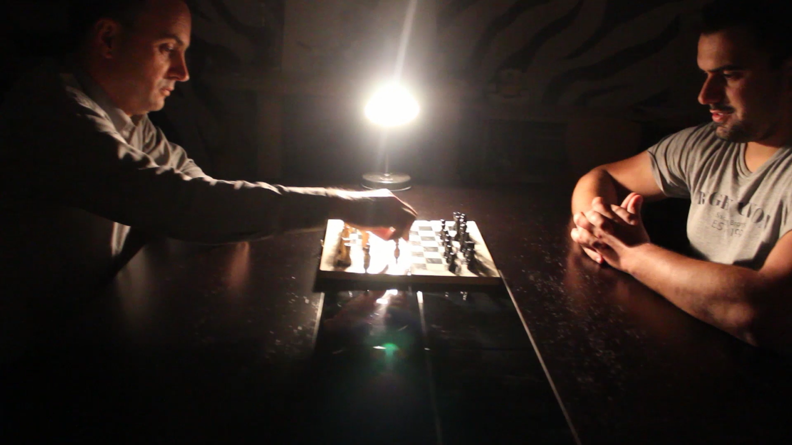

VIDEO // NOSTALGIA
O video aqui representado tem com tema a “Nostalgia”. Para mim, pensar num jogo trouxe-me muitas memórias queridas com amigos que nunca esquecerei.
O video aqui representado tem com tema a “Nostalgia”. Para mim, pensar num jogo trouxe-me muitas memórias queridas com amigos que nunca esquecerei.